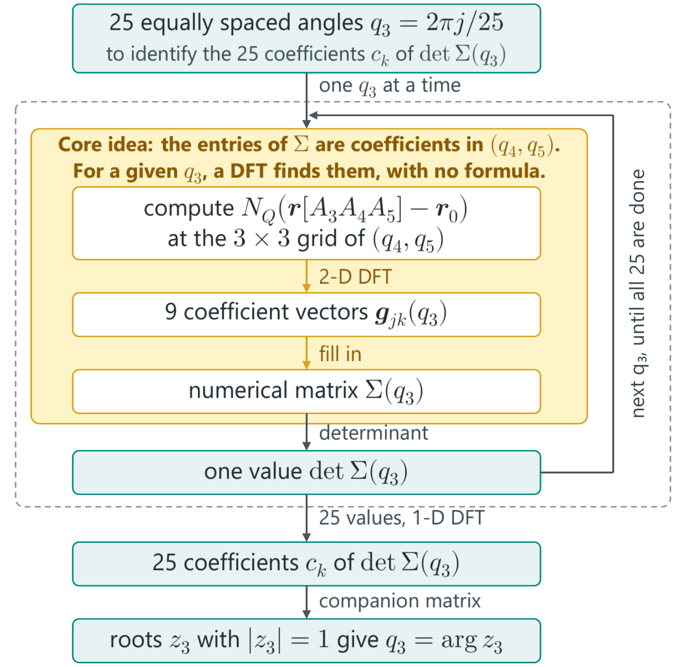
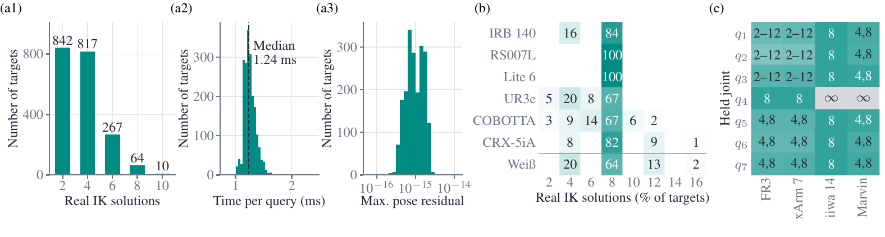

isolated IK solutions of any 6R geometry, up to 16, from numbers alone
median per query, in pure Python with NumPy
against dense multistart numerical IK on random and commercial arms
Abstract
Algebraic inverse kinematics (IK) of general six-revolute (6R) manipulators returns all solutions, but it rests on long symbolic derivations that few libraries implement. Closed-form solvers avoid them only for special geometries such as a spherical wrist. This work presents a solver that takes any 6R geometry as numbers and returns all isolated IK solutions in about one millisecond, in pure Python. The matrices of the classical elimination are long symbolic expressions, but their entries are coefficients of trigonometric polynomials that are easy to evaluate numerically, and whose largest exponent is known in advance. Evaluating them at a few equally spaced angles and applying a discrete Fourier transform yields the coefficients exactly, with no symbolic algebra. The real roots of the elimination determinant are then eigenvalues of modulus one of a companion matrix, and the remaining angles follow one at a time from small eigenvalue problems.
All solutions in 3-D
Pick a robot and a target. The solutions are computed live in your browser by trigo_ik.js, the JavaScript version of the solver. Each view shows one IK solution of the same target pose of the flange. Drag to rotate all views together, scroll to zoom, right-drag to pan. The targets are forward kinematics of random joint vectors, and joint limits are not applied.
Six-axis arms: the solver runs directly. Seven-axis arms: one joint is held at a random angle, and the solver returns all solutions of the remaining six. When all twelve elimination routes are degenerate, the chain has continuous self-motion, and the solver reports it instead of an empty set. Robot meshes are the vendors' visual models.
Method

- Drop q_6. Two columns of the loop equation do not depend on q_6.
- Coefficients by DFT. The Raghavan–Roth quantities are trigonometric polynomials of known degree. Their values on a small grid of equally spaced angles give all coefficients exactly through a DFT.
- Eliminate. A left null space removes two joint angles and leaves the 12\times12 matrix \Sigma(q_3).
- Solve for q_3. With z=e^{iq_3}, the roots of \det\Sigma are eigenvalues of modulus one of a companion matrix.
- Back-substitute. q_4 from a 6\times6 eigenproblem, q_5 from a quadratic, q_1, q_2 from a linear system, and q_6 from the remaining rotation.
- Twelve routes. Starting at each joint, forwards and backwards, gives twelve equivalent eliminations. The first route with full rank is selected once per robot, which handles parallel and intersecting axes.
Results

| Manipulator | Model | Full-rank routes | Real solutions | Time (ms) median / p99 | Agree with numerical IK |
|---|---|---|---|---|---|
| ABB IRB 140 | DH | 3 | 4–8 | 1.32 / 1.62 | 20/20 |
| Kawasaki RS007L | URDF | 2 | 8 | 1.45 / 1.75 | 20/20 |
| UFACTORY Lite 6 | URDF | 4 | 8 | 1.52 / 1.99 | 20/20 |
| Universal Robots UR3e | URDF | 1 | 2–8 | 1.37 / 2.08 | 20/20 |
| DENSO COBOTTA | URDF | 4 | 2–12 | 1.38 / 1.69 | 20/20 |
| FANUC CRX-5iA | URDF | 2 | 4–16 | 1.43 / 1.89 | 53/53 |
| Weiß manipulator | DH | 4 | 4–16 | 1.42 / 1.95 | 5/5 |
Timings: one core of an Intel Core Ultra 9 285K. They depend on the machine and the NumPy build.
Code
One Python file, NumPy only, MIT License. It reads DH parameters or a URDF file, holds extra joints of redundant arms at given angles, and returns every solution with its angles in [-\pi,\pi). A JavaScript version with the same interface and no dependencies runs in the browser and in Node, and it is the one that computes the solutions on this page.
import numpy as np
from trigo_ik import TrigoIK
ik = TrigoIK.from_urdf("robots/crx5ia.urdf") # or TrigoIK.from_dh(d, a, alpha)
T = ik.fk(np.random.default_rng(0).uniform(-np.pi, np.pi, 6))
Q = ik.ik(T) # (n, 6): all solutions
print(len(Q), ik.residual(Q, T).max())
ik7 = TrigoIK.from_urdf("robots/fr3.urdf", locked={"joint3": 0.4}) # 7-axis arm, joint 3 held// JavaScript (ES module, browser or Node)
import { TrigoIK } from './trigo_ik.js';
const H = Math.PI / 2;
const ik = TrigoIK.fromDH({ d: [0, 0, 0, 0.5, 0, 0], a: [0, 0.6, 0, 0, 0.13, 0], alpha: [H, 0, -H, H, H, 0] });
const T = ik.fk([0.1, -0.5, 0.3, -1.2, 0.4, 0.9]);
const Q = ik.ik(T); // array of 6-vectors
// TrigoIK.fromURDF(urdfText, { locked: { joint3: 0.4 } }) reads a URDF file's text| trigo_ik.py | the solver, in a single file |
| trigo_ik.js | the same solver in JavaScript, no dependencies |
| example.py | DH robot, URDF robot, 7-axis arm with one joint held |
| experiments.py | smaller-scale versions of the experiments (about half a minute) |
| show_solutions.py | draws all solutions of a target with matplotlib |
| README.md | usage, DH and URDF conventions, method in brief |